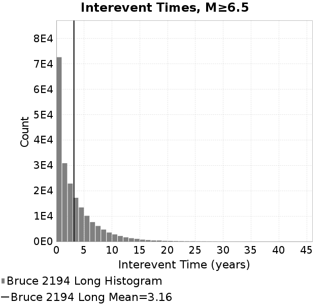

| Catalog | Bruce 2194 Long |
|---|---|
| Author | Bruce Shaw (extended by Jacqui Gilchrist), 2017/08/31 |
| Description | Catalog with decent large event scaling and distribution of sizes while not using any of the enhanced frictional weakening terms. |
| Fault/Def Model | Fault Model 3.1, Geologic |
| Slip Velocity | 1.0 m/s |
| Average Element Area | 1.34 km^2 |
| Length | 16,253,499 events in 641,547 years |
| Scatter | 2-D Hist |
|---|---|
| Scatter | |
| ----- | ----- |
| Distance/Velocity | |
| M≥6 | M≥6.5 | M≥7 | M≥7.5 |
|---|---|---|---|
 |  |  |  |